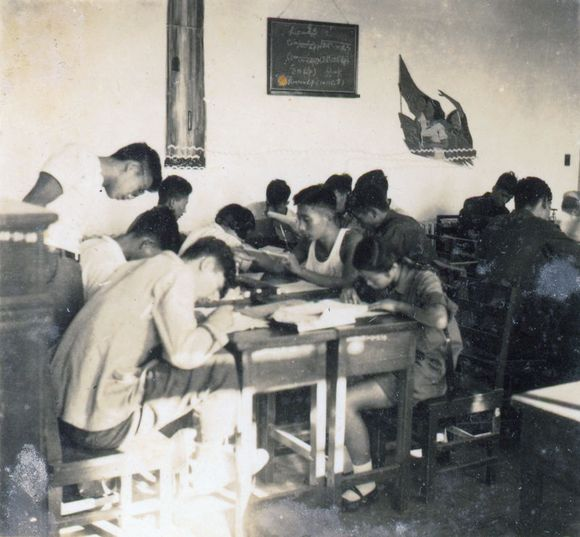

华水历史
北京时期(1951-1969)
新中国成立初期,由当时的水利部部长傅作义于1951年主持创建了学校的前身——水利部北京水利学校。隶属国家水电部管理。
1951年9月15日,中央人民政府水利部在北京创办的水利部水利学校正式开学,有学生115人,校长由水利部办公厅副主任郝执斋兼任，校址设在阜城门内巡捕厅十号（今民康胡同）。
1958年10月6日，北京水利学校与北京水利发电函授学院、北京水力发电学校合建北京水利水电学院。院长由北京水利水电科学研究院院长张子林兼任。10月6日确定为校庆日。
1958年起，先后接受越南、 尼泊尔、印度尼西亚、喀麦隆等国留学生（1966年停止，2004年恢复）。
1959年7月23日，北京水利水电学院一部收归水利电力部直接领导，恢复北京水力发电学校。
1960年，学校援建越南水利水电学院。
1960年9月，著名水利专家、黄河三门峡水库工程局总工程师、中科院学部委员汪胡桢调来学院任院长。
1963年，哈尔滨建筑工程学院（现并入哈尔滨工业大学）河川枢纽及水电站建筑专业合并到该校，同年开始招生。
1966年4月，周恩来总理来河北地震地区视察，于4月3日到大名县前桑园大队，在座谈时了解到华北缺乏水利人才，于是提出了将北京水利水电学院从北京迁至邯郸的建议。
1965年，学校开始招收培养研究生。
1966年5月30日，水利电力部致河北省委、省革委将北京水利水电学院迁往河北省邯郸市磁县岳城水库工地。
邯郸时期（1977-1989）
1972年11月7日，河北水利水电学院在邯郸中华大街南头建校，岳城建教学点。
1978年9月28日，河北水利水电学院改名为华北水利水电学院。
1978年，经国务院批准，在北京西郊花园村原北京水利水电学院旧址成立华北水利水电学院北京研究生部，由华北水利水电学院和北京水利水电科学研究院双重领导。
1980年1月3日，撤销岳城教学基地办公室，决定将学校的房屋、设备等暂时移交水利电力部第五工程局 。
1981年11月，国务院批准华北水利水电学院为首批硕士学位授予权单位。
1983年12月，根据水利电力部指示，华北水利水电学院北京研究生部划归北京水利电力经济管理学院领导，对外仍称华北水利水电学院北京研究生部。
1984年9月23日，水利电力部同意汪胡桢任华北水利水电学院名誉院长。
1986年起，学校先后与中国科学院地质研究所、中国农科院农田灌溉研究所、清华大学、同济大学等20余所高等院校和科研院所联合培养博士研究生。
郑州时期（1990- )
1987年6月30日，国家教委同意将华北水利水电学院成建制地由河北省邯郸市迁至河南省郑州市。
1990年9月6日，由国务院总理李鹏题写的“华北水利水电学院”新校牌揭幕仪式在郑州新校隆重举行 。
1991年9月1日，校本部迁郑办公。遗留校舍和人员组建华北水利水电学院（邯郸）。
1992年5月经水利部批准，在华北水利水电学院北京研究生部、北京水利电力函授学院和中共水利部直属机关党校的基础上成立北京水利水电管理干部学院。

2001年，华北水利水电学院北京研究生部和北京水利电力函授学院并入北京工业大学。
2001年6月15日，学校重建研究生处，即华北水利水电学院研究生处 。
2003年3月25日，河南省计划委员会批复同意该校在龙子湖高校园区选址建设新校区，总征地面积1770亩，远期发展规模为在校全日制学生18000人，主要承担本科生和研究生教育。
2015年被教育部确定为“金砖国家网络大学”中方参与的11所高校之一，并成为“金砖国家大学联盟”中方创始成员高校。